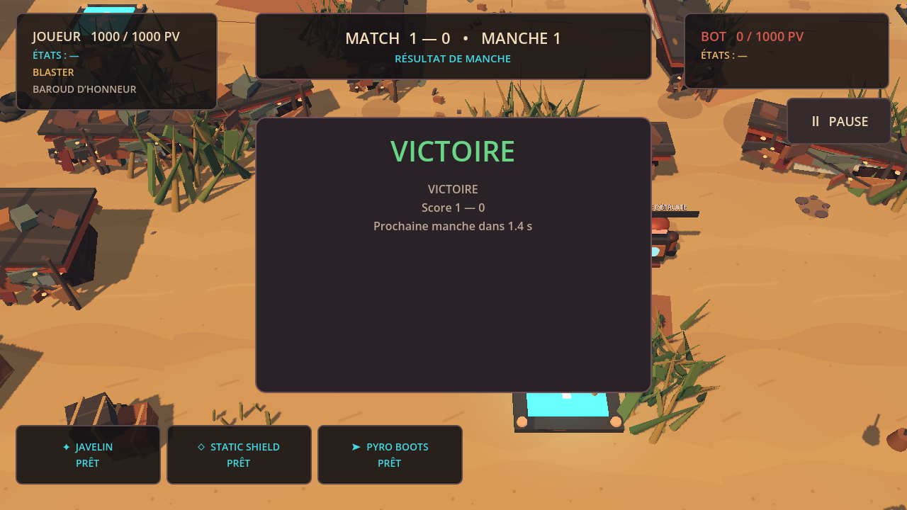

DUEL DIRECT
Un match local contre un bot, des manches successives et un score à faire grimper jusqu’à trois.
UN PROJET DE DEUX FRÈRES
Un duel de robots en 2,5D. Compose ton équipement, lis le terrain et sois le premier à remporter trois manches.
01 / LE JEU
Prototype 0 est un premier jeu d’arène pensé autour de combats courts et nerveux. Tu choisis ton arsenal, puis tu affrontes un bot dans un terrain où les couverts changent chaque trajectoire.
Un match local contre un bot, des manches successives et un score à faire grimper jusqu’à trois.
Arme, module offensif, défense, mobilité et passif : cinq choix pour inventer ta façon de te battre.
Déplace-toi entre les couverts de ferraille. Les obstacles arrêtent aussi bien les robots que leurs projectiles.
02 / L’ARÈNE
Une arène 3D vue en 2,5D, des murs de ferraille, des caisses et des angles à exploiter. La caméra suit ton robot et anticipe ta visée pour garder le combat au centre.

03 / ÉQUIPEMENT
La victoire commence avant le duel. Sélectionne un choix dans chaque catégorie pour construire ton équipement.
FRAPPE À DISTANCE
Précision et tir chargé d’un côté. Six plombs à courte portée de l’autre. Le choix de l’arme change le rythme de chaque échange.

04 / DIRECTION ARTISTIQUE
La même arme, cinq styles visuels. Choisis celui qui te plaît le plus : il pourrait donner le ton à toutes les icônes de l’équipement.
05 / IDENTITÉ SONORE
Écoute ces trois tirs créés pour l’arme Blaster de Prototype 0. Choisis celui qui te plaît le plus, puis partage ton choix avec nous.
Au-delà du duel actuel, notre ambition est de laisser les joueurs personnaliser l’arène et d’en faire une vraie partie de leur stratégie.
VISION EN DÉVELOPPEMENT06 / LE PROJET
Prototype 0 est notre terrain d’expérimentation. Nous construisons le jeu étape par étape, du ressenti des armes à la boucle complète des manches.
EXPLORER LE DÉPÔT
Combat de robots · arène 2,5D · prototype V0.2